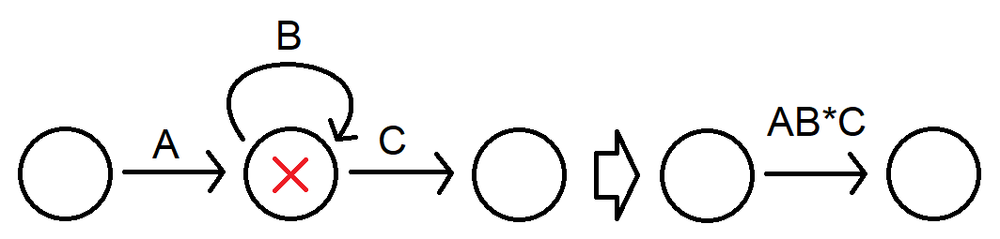
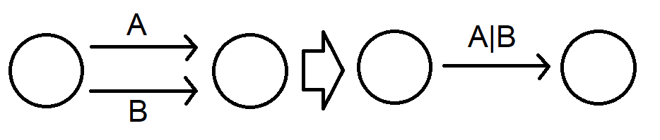
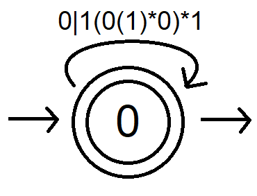
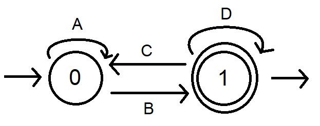

For any divisor d, remainder r, and base b, it's possible to generate a regular expression that matches exactly all n satisfying:
n % d = r
when n is represented in the given base b. Note that for r = 0, this just tests whether n is divisible by d. There is no theoretical limit on b, but the implementation here only goes to hexadecimal to allow for the obvious encoding.
The algorithm has exponential complexity and the resulting regex grows just as fast, rendering this method computationally intractable for divisors larger than ~30 or so, but I think the process is neat.
You try:
match n %
=
in base
d > 0
0 ≤ r < d
1 ≤ b ≤ 16
When I first saw this CodeWars problem I was at something of a loss. I couldn't fathom how a regular expression could be used to evaluate divisibility! It took a few hours of searching through assorted half-explanations before I grokked it—now I'm writing this for my own edification.
Any given numeral representation of a number is a string, and therefore can be evaluated by a Deterministic Finite Automaton (DFA). In other words, the binary number "110" (6 in decimal) can be fed to a DFA one character at a time, from left-to-right, as the inputs "1", "1", and "0".
If the i digits we have read so far from the numeral n in base b representation have remainder ri mod d, then upon reading the next digit x, the new running remainder will be:
ri+1 = b × ri + x mod d
This is guaranteed by the congruence relation of modular arithmetic, in that it is always true that r ≡ n mod d. Importantly, this means that we don't need to store the value of the digits we have read so far; we only need to maintain a state representing the running remainder, and track transitions between states until we finish reading in the numeral.
Meanwhile, r0 = 0, because we haven't read anything in yet. Since we have both a base case and an i + 1 case, we know that we can determine the remainder of any number by reading it one digit at a time and keeping track only of the running remainder.
This DFA will have d states corresponding to each possible remainder in [0..d), which we call Si. Each state will have b directed edges indicating transitions to the next state depending on incoming digit; these transitions are calculated with the equation in part 2. Here is the DFA for divisor 3 in binary:
Properly speaking, a DFA will be defined with a starting state and at least one accepting state, the latter indicated by a double-circle. The DFA accepts a string if it is in an accepting state after reading the string in. The starting state for our purposes will always be 0. The accepting state can be whichever remainder we please. Here are two DFAs, one with accepting state S0 and the other S1:
In principle, each DFA can compute whether a given binary number satisfies the respective condition.
We use a process called elimination. Each state that is neither starting nor accepting is eliminated one at a time, with the incoming and outgoing transitions stitched together in the obvious way:
This might introduce parallel transitions, which we can merge with disjunction:
Conventional DFA notation typically represents disjunction as addition (+), because it is a union operation, but because we're reducing to regex anyway I'm using the corresponding regex operator. Note that the above method applies to recursive transitions, i.e. transitions from a state to itself, just as well.
Once we've eliminated the other states, our first DFA becomes:
There is a slight abuse of notation here in that we are simplifying the role of incoming and outgoing arrows, which should be states of their own. For our purposes this simplification is inconsequential. What this reduced DFA tells us is that any string satisfying the given regular expression is a recursive transition from r = 0 back to this state. Any other string will be rejected. Therefore, the regex we want allows arbitrarily many repetitions of this transition and nothing else:
(0|1(0(1)*0)*1)*
The case is slightly different if our target remainder isn't 0, because we are left with separate starting and accepting states:
The reduction is simple, however. We can rewrite the situation thus:
And our desired regular expression will be:
(A|BD*C)*BD*
Where (A|B(D)*C)* represents arbitrarily many returns to the starting state, before arriving at the accepting state with B and possibly looping with (D)*. In this case, the resulting regex is:
(0|1(01*0)*1)*1(01*0)*
When you run the above generator, it is simply executing this algorithm with the given parameters.
a) if d = bp for some integer p, then the matching expression for r = 0 is:
^*0{p}$
and there is no solution for other r. For example, given divisor 4 in base 2, the expression ^*0{2}$ will match all binary numbers ending in 00, i.e. multiples of 4.
b) if b = 1 then we are in a tally system, and the following will match the given parameters:
^0{r}(0{d})*$
The algorithm is written in Rust and packed for js with WebAssembly. You can check out the source here.
The first degenerate case above is unimplemented. It's fine.
There is also currently no regex simplification implemented, so the resulting expressions may contain redundancies (including extraneous parentheses), especially as they grow larger. Unfortunately this will require a total refactor, and I'm not sure if I can make it work with WebAssembly. We'll see.
[1] A similar generator, in JavaScript and computing only r = 0
[2] A helpful illustration of DFA elimination
[3] Another such demonstration
[4] I liked this answer on StackOverflow